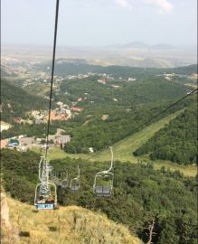

Посмотри мне в глаза.Ты прости мне, я сожалею.Я люблю тебя!Жизнь моя без тепла,Я тобой болею.Удержать не смогли,
Я Вас узнал, Вы мне приснились,Во сне Вы были так милы!И Боги так распорядились,Чтоб встретились здесь я и Вы.
Но ты, вдруг узнаешь меняСреди тысячи левых людей...Ты - яркий луч Солнца, когдаБольше нет ничего веселей.
L’amour заветный в жизни нашей,Порою так необходим!Нам с ним и враг совсем не страшен,А без него мы все дрожим.
Октябрь, осень набирает обороты,Всё больше уступая место ноябрю.Листвою золотой покрыты все дороги,Ну а ключ к сердцу фраза: "я тебя люблю".
Я вызову в тебе улыбку,Когда печальна будешь ты.Я знаю вредную привычку,И сокровенные мечты.
Когда к тебе придёт печаль,Не забывай, что есть на свете:Стихи поэтов, вкусный чай,И пару фильмов в интернете.

Армянский воздух – он другой,Им даже дышится иначе.Такой очищенный, родной,Что чувствуешь себя богаче.
Я снова убедился в том, что в этом мире,Осталась человеческая доброта.Не все, поверьте мне, плохие,Есть те, кто будет рад помочь всегда.
Нам говорят, что счастье в тишине,Что так его намного легче сохранить.Но как молчать, когда огонь в душе,Нам не даёт спокойно жить?
Не важно сколько роз тебе подарит,Не важно скажет ли тебе люблю.Важней, когда он просто рядом,И обнимает девочку свою.
Есть множество в тебе прекрасных черт,Которым счёту даже нет.Ты самый вкусный мой десерт,Зажгла в душе моей ты свет.
Я чувствую себя отлично,И боль меня уж не тревожит.Я сделаю себе в привычку,С утра внушать одно и то же.
И тут я понял, что в твой плен попал,И как вести себя совсем не знал.В глазах бездонных свет снискал,И сердце мне дало сигнал.
Всё-таки есть человечность на свете,И воду человек человеку подаст.Сказать спасибо – так мало сказать,Хотелось б о нём напечатать в газете.
Я буду счастлив!.. Нет, уже,Могу себя таким считать.Ведь счастье – это на земле,Когда живут отец и мать.
Und wenn mein Seele still.(Und wenn mein Seele still.)
С сегодняшнего дня начнётся сказка,Длиною в триста с лишним дней.Вы обретёте то, о чём мечтали,И станете чуть-чуть добрей.
Я разгадал твой сказочный пароль,Он был мечтою маленькой Ассоль.Хочу под алым парусом дойтиИ до твоей мечты, если любишь ты.
Там в горах, где есть река,Жил да был Ходжа-ака,Весельчак, добряк, смельчак,С ним не попадёшь впросак.Хоть ты не богат Ходжа,